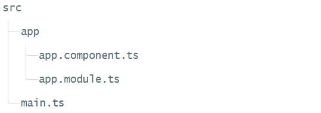

Setup Anugular 2 application
Setup a local development environment
- Verify that you are running node v4.x.x or higher and npm 3.x.x or higher
- Create a project folder
- Clone or download the QuickStart seed into your project folder
- Install npm packages
- Run npm start to launch the sample application
git clone https://github.com/angular/quickstart.git quickstart
cd quickstart
npm install
npm start
What's in the QuickStart seed?

//src/app/app.component.ts
import { Component } from '@angular/core';
@Component({
selector: 'my-app',
template: `Hello {{name}}
`
})
export class AppComponent { name = 'Angular'; }
//src/app/app.module.ts
import { NgModule } from '@angular/core';
import { BrowserModule } from '@angular/platform-browser';
import { AppComponent } from './app.component';
@NgModule({
imports: [ BrowserModule ],
declarations: [ AppComponent ],
bootstrap: [ AppComponent ]
})
export class AppModule { }
//src/main.ts
import { platformBrowserDynamic } from '@angular/platform-browser-dynamic';
import { AppModule } from './app/app.module';
platformBrowserDynamic().bootstrapModule(AppModule);
SystemJS configuration for Angular
(function (global) {
System.config({
paths: {
'npm:': 'node_modules/'
},
map: {
app: 'app',
'@angular/core': 'npm:@angular/core/bundles/core.umd.js',
'@angular/common': 'npm:@angular/common/bundles/common.umd.js',
'@angular/compiler': 'npm:@angular/compiler/bundles/compiler.umd.js',
'@angular/platform-browser': 'npm:@angular/platform-browser/bundles/platform-browser.umd.js',
'@angular/platform-browser-dynamic': 'npm:@angular/platform-browser-dynamic/bundles/platform-browser-dynamic.umd.js',
'@angular/http': 'npm:@angular/http/bundles/http.umd.js',
'@angular/router': 'npm:@angular/router/bundles/router.umd.js',
'@angular/forms': 'npm:@angular/forms/bundles/forms.umd.js',
'rxjs': 'npm:rxjs',
'angular-in-memory-web-api': 'npm:angular-in-memory-web-api/bundles/in-memory-web-api.umd.js'
},
packages: {
app: {
defaultExtension: 'js'
},
rxjs: {
defaultExtension: 'js'
}
}
});
})(this);
SystemJS: paths serve as alias
paths: {
'npm:': 'node_modules/'
},
SystemJS: map tells the System loader where to look for things
map: {
// our app is within the app folder
app: 'app',
// angular bundles
'@angular/core': 'npm:@angular/core/bundles/core.umd.js',
'@angular/common': 'npm:@angular/common/bundles/common.umd.js',
'@angular/compiler': 'npm:@angular/compiler/bundles/compiler.umd.js',
'@angular/platform-browser': 'npm:@angular/platform-browser/bundles/platform-browser.umd.js',
'@angular/platform-browser-dynamic': 'npm:@angular/platform-browser-dynamic/bundles/platform-browser-dynamic.umd.js',
'@angular/http': 'npm:@angular/http/bundles/http.umd.js',
'@angular/router': 'npm:@angular/router/bundles/router.umd.js',
'@angular/forms': 'npm:@angular/forms/bundles/forms.umd.js',
// other libraries
'rxjs': 'npm:rxjs',
'angular-in-memory-web-api': 'npm:angular-in-memory-web-api/bundles/in-memory-web-api.umd.js'
},
SystemJS: packages tells the System loader how to load when no filename and/or no extension
packages: {
app: {
defaultExtension: 'js'
},
rxjs: {
defaultExtension: 'js'
}
}
TypeScript Congiguration File
TypeScript configuration file (tsconfig.json) is added in the project to guide the compiler as it generates JavaScript files
{
"compilerOptions": {
"target": "es5",
"module": "commonjs",
"emitDecoratorMetadata": true
}
}
- Transpile the code into the ES5 syntax
- Use CommonJS module format
- Emit design-type metadata for decorated declarations in source
CLI QUICKSTART
Use the CLI tool to quickly build Angular applications
Step 1. Set up the Development Environment
npm install -g @angular/cli
Step 2. Create a new project
ng new my-app
Step 3: Serve the application
cd my-app
ng serve